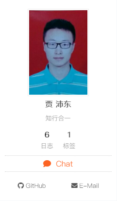
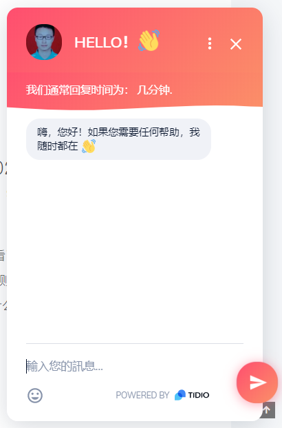

今天起来得特别早，主要就是倩倩今天第一天上班嘞，我怕她一个人早上坐车比较害怕，所以我就早点起来，万一说害怕了给我打电话我也能接上。上周五我的湖盐发债上市了，然后截止到上周五收盘赚了160.6，看看这次能赚多少, hhh。起的太早了，脑子还是有点蒙的。
今天想做的任务有先看怎么释放结构体等的内存，然后查时间看TLE。
ADD HEXO：在线聊天Tidio
代码
1
2
3
4
5
6
7
8
9# themes/next/config.yml 214-221
# A button to open designated chat widget in sidebar.
# Firstly, you need enable the chat service you want to activate its sidebar button.
chat:
enable: true
#service: chatra
service: tidio
icon: fa fa-comment # Icon name in Font Awesome, set false to disable icon.
text: Chat # Button text, change it as you wish.
1 | # themes/next/config.yml 766-771 |
- 实现效果
侧栏

右下角聊天框
